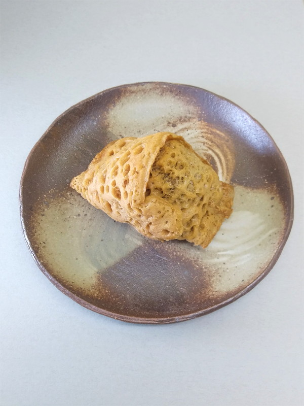
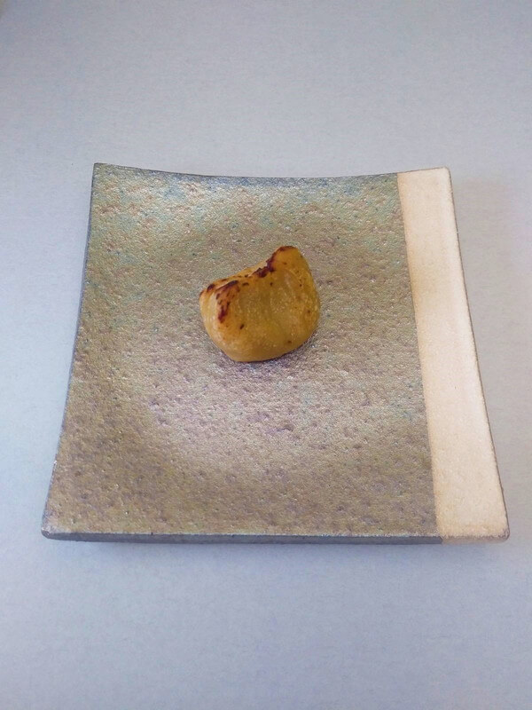

- 織部上用
加賀丸芋と上新粉のきめ細やかな生地と、小豆皮むきあんの上品なお饅頭です。古田織部にちなみ釉薬の緑に梅と井桁の焼き印を押しました。
販売期間 冬季
消費期限 四日間
特定原材料など 山芋
価格 一個 一七〇円
- 秋だより
白い最中種にほんのりと甘酸っぱい梅と柚子、芳り高い抹茶の軟らかな餡をはさみ秋の風物詩の焼き印を押しました。
販売期間 秋季
賞味期限 一月間
特定原材料など なし
価格 一袋 二四〇円
- 松笠

しっとりと柔らかく炊いた粒あんと深みのある黒糖生地のふくさやきです。お早めにお召し上がりください。
販売期間 冬季
消費期限 三日間
特定原材料など 卵、小麦
価格 一個 一八〇円
- 越の焼き栗

新栗の本来の味わいにこだわりました。見附市堀溝産の生栗を蒸し上げ、一つ一つ実をとり出し裏ごしして仕上げています。
販売期間 冬季
消費期限 三日間
特定原材料など なし
価格 一個 二八〇円
- きんつば
北海道十勝産の新小豆を炊いてつくるきんつばです。すっきりとした甘さに仕上げ、、小豆の美味しさを感じられるお菓子です。
販売期間 冬季
消費期限 七日間
特定原材料など 卵
価格 一個 二〇〇円
- 胡桃
信州産の和くるみを信州産の和くるみを添えた焼き饅頭です。第二四回全国菓子大博覧会で名誉総裁賞を受賞しました。
販売期間 通年
消費期限 七日間
特定原材料など 卵、小麦、胡桃
価格 一個 一二〇円
- 花篝
小豆こしあんを包み日本酒を含ませた桃山です。長岡市横枕町の地酒「お福正宗」のふくよかな香りが味わいを高めます。
販売期間 通年
消費期限 七日間
特定原材料など 卵
価格 一個 一四〇円
- 栗饅頭
蜜漬けの栗を微塵に刻みいれて餡を炊き、甘さ控えめに仕上げました。張りのある艶つけした生地が栗の風味を閉じ込めていています。
販売期間 通年
消費期限 五日間
特定原材料など 卵、小麦
価格 一個 一二〇円
- 松の実
黄身あんをほろりと崩れるクッキー生地で包んでいます。ひび割れた生地に松の実が一粒浮かんだ、バター香る口溶けのよい乳菓です。
販売期間 通年
消費期限 五日間
特定原材料など 卵、小麦
価格 一個 一二〇円
- 花いくさ
四 チョコレートを包んだと白あんと、ミルク風味の黄身あんの桃山です。内側の果実のような酸味のあるチョコレートと溶け合います。
販売期間 冬季
消費期限 七日間
特定原材料など 卵、乳、大豆
価格 一個 一四〇円
- かすてら饅頭
卵たっぷりの黄身あんをカステラ風の生地で包みました。しっとりとしたキレのよい甘さの餡の、少し懐かしい味わいの洋風和菓子です。
販売期間 冬季
消費期限 七日間
特定原材料など 卵、小麦
価格 一個 一二〇円
- 最中
創業以来の製法の餡をもち米の焦がし種が挟んでいます。特注の強めに焼きつけた種のひなびた美味しさをお試しください。
販売期間 通年
消費期限 七日間
特定原材料など なし
価格 一個 一三五円
- 粉菓子
越後の国の伝統の小豆こし餡入りの落雁です。寒梅粉の郷土のもち米の風味をお楽しみください。緑は抹茶になります。
販売期間 通年
消費期限 七日間
特定原材料など なしなし
価格 一個 一五五〇円
- 金倉山
バターカステラの中にシロップ漬けのフルーツをちりばめ、実り豊かな故郷の山並みをイメージしました
販売期間 通年
消費期限 二週間
特定原材料など 卵、乳、小麦、大豆、リンゴ、オレンジ
価格 一個 一四五円
- 煉羊羹

手間と技術を要するお菓子です。家伝の味をご堪能ください。
販売期間 通年
賞味期限 三ヶ月間
特定原材料など なし
価格 一本 七三〇円
- むつの花
厳選したもち米と和三盆糖のみを原料に仕上げました。長く茶道の友として、進物としてご重用いただく開業以来の銘菓です。
販売期間 通年
賞味期限 十四日間
特定原材料など なし
価格 四個入 八四〇円
- 干菓子
阿波和三盆糖を用いた落雁を紅白に打ち分けました。
販売期間 通年
賞味期限 二ヶ月間
特定原材料など なし
価格 五個入 二六〇円
- 胡桃玉
信州の濃厚な和ぐるみと、新潟県産大豆のきな粉のすはまです。
販売期間 通年
賞味期限 二ヶ月間
特定原材料など 胡桃、大豆
価格 五個入 二六〇円
- 栗玉
蜜漬の栗を濾して餡とし、和三盆を塗し表面を歯ざわりよく固めました。色も鮮やかな贅沢なお干菓子です。
販売期間 通年
賞味期限 二ヶ月間
特定原材料など なし
価格 五個入 二六〇円
- 香龍

梅と柚子の餡を白く透けるおぼろだねではさみ、竜の焼印を押しました。蓬平町の髙龍神社の名を頂いた優雅なお菓子です。
販売期間 通年
賞味期限 一ヶ月間
特定原材料など なし
価格 二枚入 一六〇円
- 石の里
名前は昔、石の名産地として栄えた村松の地にちなみました。卵と和三盆糖、寒天のお干菓子です。
販売期間 通年
賞味期限 三ヶ月間
特定原材料など 卵
価格 五枚入 一六〇円
- 蔵のかほり
表面をしゃらせた琥珀寒です。長岡の銘酒の味をお愉しみください。
販売期間 通年
賞味期限 三ヶ月間
特定原材料など なし
価格 一袋 三六〇円
- くず湯

古くからの滋味に富んだ葛の味をお楽しみいただけます。塩漬けの花を入れた桜と抹茶の二種類をご用意しております。
販売期間 通年
賞味期限 三ヶ月間
特定原材料など なし
価格 一袋 一一〇円